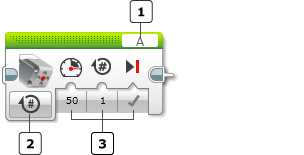
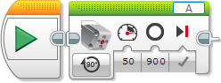
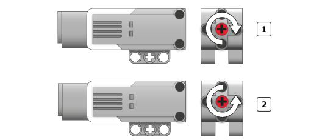

					<table cellpadding="0" cellspacing="0" border="0"><tbody><tr><td>
	
						<h1>中型电机模块<a name="top"></a></h1>
		<div id="block_1" class="block blockHeader">
				<table cellspacing="0" cellpadding="0" border="0">
			<tbody><tr>
				<td valign="top" class="image"></td>
				<td valign="top" class="description"><div class="text-wrapper">中型电机模块控制中型电机。可以开启或关闭电机、控制其功率级别或是将电机开启指定时间量或圈数。</div></td>
			</tr>
		</tbody></table>
			</div>
	<div id="block_56" class="block blockChaptor">
		<div class="title">选择电机端口和控制模式</div>
		<div class="description"><br>
<br>
 端口选择器<br>
 模式选择器<br>
 输入<br>
<br>
<br>
使用模块顶部的<a href="./index.html?id=PortSelector">端口选择器</a>可选择希望中型电机模块控制的电机（A、B、C 或 D）。  <br>
<br>
使用模式选择器可选择要如何控制电机。选择模式之后，可以为输入选择值。可用输入会因模式而异。下面介绍了模式和输入。</div>
			<div class="links">模式：<a href="./index.html?id=MediumMotor#Mode_Unlimited">开启</a>、<a href="./index.html?id=MediumMotor#Mode_Stop">关闭</a>、<a href="./index.html?id=MediumMotor#Mode_Time">开启指定秒数</a>、<a href="./index.html?id=MediumMotor#Mode_Degrees">开启指定度数</a>、<a href="./index.html?id=MediumMotor#Mode_Rotations">开启指定圈数</a></div>
	</div>
	<div id="block_41" class="block blockChaptor">
		<div class="title"><a name="Modes" style="position:relative; top:-10px;"></a>模式</div>
		<div class="description"></div>
	</div>
	<div id="block_382" class="block blockMode">
		<div class="title"><a name="Mode_Unlimited" style="position:relative; top:-10px;"></a>开启</div>
		<div class="description"><br>
<br>
“开启”模式会打开电机，然后立即继续执行到程序中的下一个模块。可以使用<a href="./index.html?id=MediumMotor#Speed">功率</a>输入控制电机的速度和方向。电机会一直运行，直到由程序后面部分中的另一个模块停止或更改，或是直到程序结束。</div>
			<div class="links">使用的<a href="./index.html?id=MediumMotor#Inputs">输入</a>：<a href="./index.html?id=MediumMotor#Speed">功率</a></div>
	</div>
	<div id="block_68" class="block blockExample">
		<div class="title">示例</div>
		<div class="image"></div>
		<div class="description">当希望程序中的其他模块控制电机保持开启状态的时间长度时可使用“开启”模式。在此程序中，电机会一直运行，直到按压了触动传感器，然后它会停止。</div>
	</div>
	<div id="block_383" class="block blockMode">
		<div class="title"><a name="Mode_Stop" style="position:relative; top:-10px;"></a>关闭</div>
		<div class="description"><br>
<br>
“关闭”模式会关闭电机。它通常用于停止通过<a href="./index.html?id=MediumMotor#Mode_Unlimited">开启</a>模式启动的电机。请参见上面的示例。<br>
<br>
如果<a href="./index.html?id=MediumMotor#BrakeAtEnd">结束时制动</a>为“真”，则会立即停止电机。电机会保持在停止位置，直到另一个电机模块启动该电机，或是直到程序结束。如果<a href="./index.html?id=MediumMotor#BrakeAtEnd">结束时制动</a>为“伪”，则仅仅关闭电机的电源。电机会使用所有剩余动量惯性滑行，直到停止，或是直到另一个电机模块启动。</div>
			<div class="links">使用的<a href="./index.html?id=MediumMotor#Inputs">输入</a>：<a href="./index.html?id=MediumMotor#BrakeAtEnd">结束时制动</a></div>
	</div>
	<div id="block_44" class="block blockTip">
		<div class="title">提示和技巧</div>
		<div class="boxContent">
			<div class="description">可以在<a href="./index.html?id=MediumMotor#BrakeAtEnd">结束时制动</a>设置为“伪”的情况下使用“关闭”模式来“松开”保持在停止位置处的电机。例如，这可以允许您在程序运行中途手动调整电机位置。</div>
				</div>
	</div>
	<div id="block_384" class="block blockMode">
		<div class="title"><a name="Mode_Time" style="position:relative; top:-10px;"></a>开启指定秒数</div>
		<div class="description"><br>
<br>
“开启指定秒数”将电机开启<a href="./index.html?id=MediumMotor#Seconds">秒数</a>输入中的秒数，然后关闭。模块会等到这段时间经过，然后程序才继续执行到下一个模块。 <br>
<br>
可以使用<a href="./index.html?id=MediumMotor#Speed">功率</a>输入控制电机的速度和方向。对<a href="./index.html?id=MediumMotor#BrakeAtEnd">结束时制动</a>使用“真”可在恰好达到指定秒数之后停止电机。</div>
			<div class="links">使用的<a href="./index.html?id=MediumMotor#Inputs">输入</a>：<a href="./index.html?id=MediumMotor#Speed">功率</a>、<a href="./index.html?id=MediumMotor#Seconds">秒数</a>、<a href="./index.html?id=MediumMotor#BrakeAtEnd">结束时制动</a></div>
	</div>
	<div id="block_46" class="block blockTip">
		<div class="title">提示和技巧</div>
		<div class="boxContent">
			<div class="description">可以在<a href="./index.html?id=MediumMotor#Seconds">秒数</a>输入中使用小数点获取精确时间量，如用于三秒半的 3.5 秒以及用于四分之一秒的 0.25 秒。</div>
				</div>
	</div>
	<div id="block_385" class="block blockMode">
		<div class="title"><a name="Mode_Degrees" style="position:relative; top:-10px;"></a>开启指定度数</div>
		<div class="description"><br>
<br>
“开启指定度数”将电机开启<a href="./index.html?id=MediumMotor#Degrees">度数</a>输入中指定的度数，然后关闭。360 度会使电机转动或旋转一整圈。<br>
<br>
可以使用<a href="./index.html?id=MediumMotor#Speed">功率</a>输入控制电机的速度和方向。对<a href="./index.html?id=MediumMotor#BrakeAtEnd">结束时制动</a>使用“真”可在恰好达到指定度数之后停止电机。</div>
			<div class="links">使用的<a href="./index.html?id=MediumMotor#Inputs">输入</a>：<a href="./index.html?id=MediumMotor#Speed">功率</a>、<a href="./index.html?id=MediumMotor#Degrees">度数</a>、<a href="./index.html?id=MediumMotor#BrakeAtEnd">结束时制动</a></div>
	</div>
	<div id="block_69" class="block blockExample">
		<div class="title">示例</div>
		<div class="image"></div>
		<div class="description">此程序会使端口 A 上的电机以 50% 功率恰好运行 900 度（两圈半），然后停止它。</div>
	</div>
	<div id="block_49" class="block blockTip">
		<div class="title">提示和技巧</div>
		<div class="boxContent">
			<div class="description">中型电机的内部转动传感器会测量旋转度数。使用“开启指定度数”时，模块会等到电机恰好转动了指定度数，然后程序才继续执行到下一个模块。如果电机因遇到阻力或物理限制而无法完成指定度数，则模块会继续等待。在消除阻力之前，程序中的任何其他模块都不会执行。</div>
				</div>
	</div>
	<div id="block_386" class="block blockMode">
		<div class="title"><a name="Mode_Rotations" style="position:relative; top:-10px;"></a>开启指定圈数</div>
		<div class="description"><br>
<br>
“开启指定圈数”将电机开启<a href="./index.html?id=MediumMotor#Rotations">圈数</a>输入中的圈数，然后关闭。  <br>
<br>
可以使用<a href="./index.html?id=MediumMotor#Speed">功率</a>输入控制电机的速度和方向。对<a href="./index.html?id=MediumMotor#BrakeAtEnd">结束时制动</a>使用“真”可在恰好达到指定圈数之后停止电机。</div>
			<div class="links">使用的<a href="./index.html?id=MediumMotor#Inputs">输入</a>：<a href="./index.html?id=MediumMotor#Speed">功率</a>、<a href="./index.html?id=MediumMotor#Rotations">圈数</a>、<a href="./index.html?id=MediumMotor#BrakeAtEnd">结束时制动</a></div>
	</div>
	<div id="block_51" class="block blockTip">
		<div class="title">提示和技巧</div>
		<div class="boxContent">
			<div class="description"><a href="./index.html?id=MediumMotor#Mode_Rotations">开启指定圈数</a>模式与<a href="./index.html?id=MediumMotor#Mode_Degrees">开启指定度数</a>模式完全相同，只不过它使用不同的旋转单位。也可以在<a href="./index.html?id=MediumMotor#Rotations">圈数</a>输入中使用小数点来指定不完整的圈。下表显示获取相同旋转量的两种不同方式。</div>
			<div id="block_54" class="block blockTable ">
		<table class="blockTable">
		

			<tbody><tr>
<th>圈数</th><th>度数</th>			</tr>
<tr><td>1</td><td>360</td></tr><tr><td>2</td><td>720</td></tr><tr><td>0.5</td><td>180</td></tr><tr><td>1.25</td><td>450</td></tr><tr><td>7.2</td><td>2592</td></tr>		</tbody></table>
	</div>
		</div>
	</div>
	<div id="block_70" class="block blockChaptor">
		<div class="title"><a name="MotorPowerAndDirection" style="position:relative; top:-10px;"></a>电机功率和方向</div>
		<div class="description"><a href="./index.html?id=MediumMotor#Speed">功率</a>输入接受介于 -100 至 100 之间的数字。正数会顺时针转动中型电机，负数会逆时针转动，如下图所示。<br>
<br>
<br>
<br>
<br>
<br>
 正功率<br>
 负功率<br>
<br>
可以使用<a href="./index.html?id=InvertMotor">反转电机</a>模块更改电机的正常旋转方向。如果反转了电机方向，则正和负功率级别的效果会与上面显示的效果相反。</div>
	</div>
	<div id="block_71" class="block blockTip">
		<div class="title">提示和技巧</div>
		<div class="boxContent">
			<div class="description">电机的旋转速度与指定功率级别大致成比例，尽管旋转速度也受电机所承受的负载量影响。</div>
				</div>
	</div>
	<div id="block_73" class="block blockChaptor">
		<div class="title"><a name="Inputs" style="position:relative; top:-10px;"></a>输入 <a name="Parameters" style="position:relative; top:-10px;"></a></div>
		<div class="description">中型电机模块的输入控制着具体的电机运行方式。可以将输入值直接输入到模块中。或者，可以通过<a href="./index.html?id=DataWires">数据线</a>从其他编程模块的输出提供值。可用输入及其功能取决于选择的控制模式。</div>
	</div>
	<div id="block_65" class="block blockTable ">
		<table class="blockTable">
		

			<tbody><tr>
<th>输入</th><th>类型</th><th>允许的值</th><th>备注</th>			</tr>
<tr><td>功率 <a name="Speed" style="position:relative; top:-10px;"></a></td><td>数字</td><td>-100 至 100</td><td>电机功率级别。 <br>
<br>
请参见<a href="./index.html?id=MediumMotor#MotorPowerAndDirection">电机功率和方向</a>。</td></tr><tr><td>结束时制动 <a name="BrakeAtEnd" style="position:relative; top:-10px;"></a></td><td>逻辑</td><td>真/伪</td><td>模块完成时应用。 <br>
<br>
如果为“真”，则电机会立即停止并保持在原位。 <br>
<br>
如果为“伪”，则电机电源停止，并允许电机惯性滑行。</td></tr><tr><td>秒数 <a name="Seconds" style="position:relative; top:-10px;"></a></td><td>数字</td><td>≥ 0</td><td>以秒为单位的移动时间。</td></tr><tr><td>度数 <a name="Degrees" style="position:relative; top:-10px;"></a></td><td>数字</td><td>任何数字</td><td>以度为单位的移动量。360 度会旋转一整圈。</td></tr><tr><td>圈数 <a name="Rotations" style="position:relative; top:-10px;"></a></td><td>数字</td><td>任何数字</td><td>以圈为单位的移动量。&nbsp;</td></tr>		</tbody></table>
	</div>
	
			<div id="quick">
				<div class="header"><a href="./index.html?id=MediumMotor#header">中型电机</a></div>
					<div class="quickText">快速链接</div>
					
					<ul>
	<li><a href="./index.html?id=MediumMotor#Modes">模式</a></li><li><a href="./index.html?id=MediumMotor#MotorPowerAndDirection">电机功率和方向</a></li><li><a href="./index.html?id=MediumMotor#Inputs">输入</a></li>					</ul>
			</div>
	
	</td></tr></tbody></table>